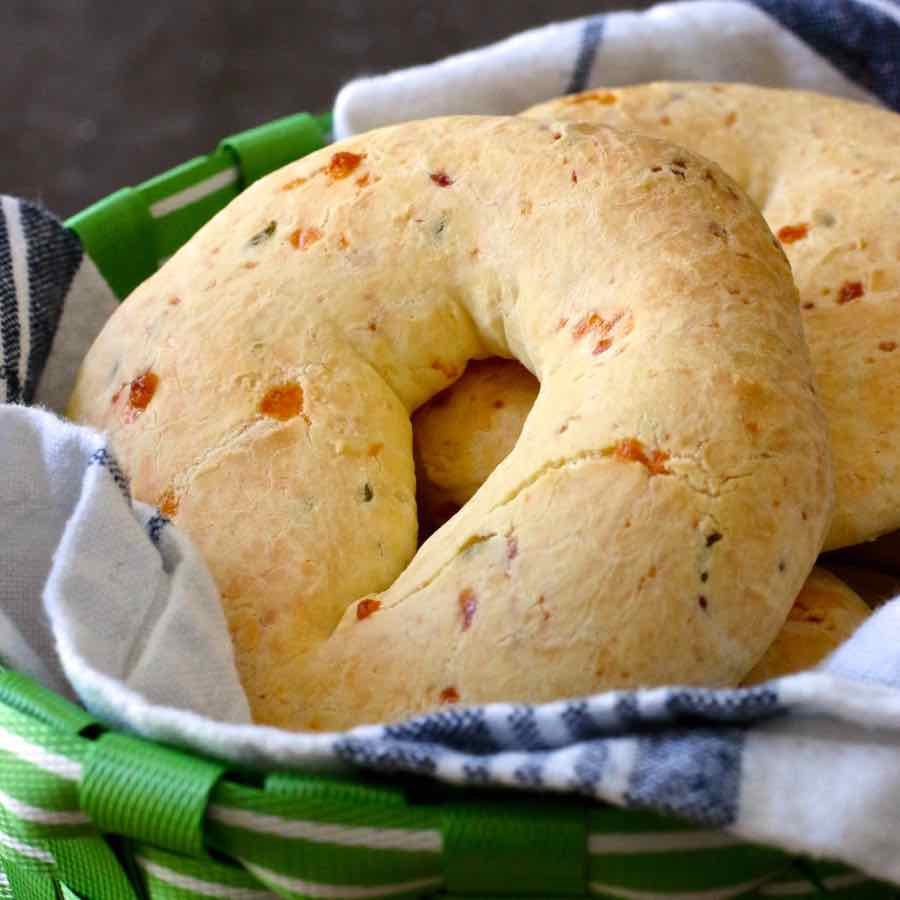
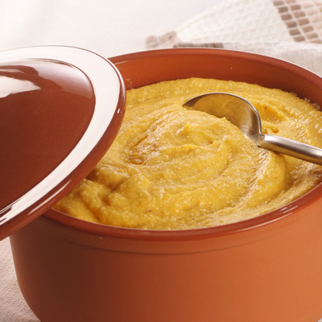
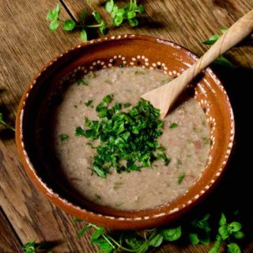
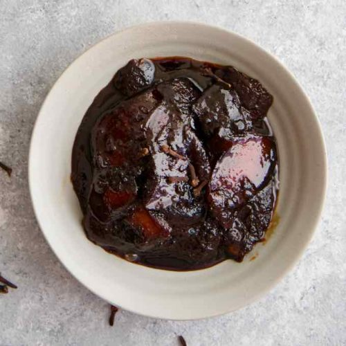
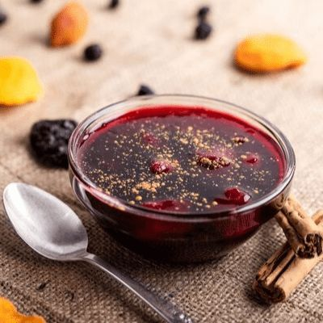

Asado a la Paraguaya
Carne a la parrilla con mandioca cocida, un clásico de los asados en Paraguay.
Ver Receta








Empanadas de Carne
Empanadas rellenas de carne sazonada, fritas o al horno, acompañadas con salsa picante.
Ver Receta